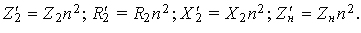

В реальных трансформаторах число витков w1 ≠ w2, поэтому непосредственно перейти от магнитной связи между катушками к кондуктивной невозможно, т. к. потенциалы соответствующих точек соединения обмоток неодинаковы (ЭДСE1L ≠ E2м)..
Для анализа процессов и для получения расчётных соотношений реальный трансформатор, у которого w1 ≠ w2 и коэффициент трансформации n ≠ 1, условно заменяют расчётным, т. н. приведённым трансформатором, у которого путем перерасчёта параметров вторичной обмотки получают n = 1. Такой трансформатор заменяют схемой замещения с кондуктивной связью, исключив магнитную связь, так как потенциалы соответствующих точек соединения будут одинаковы (ЭДС E1L = E'2м). Приведённые к числу витков первичной обмотки электрические величины вторичной обмотки будем снабжать символом ' (прим).
Запишем соотношения между приведенной E'2 и реальной ЭДС E2м взаимоиндукции (в дальнейшем E2) и напряжениями U'2 и U2:
E'2 = E2n = E1 и U'2 = U2n.
(6.6)
Чтобы при приведении параметров вторичной обмотки к числу витков первичной обмотки не нарушить энергетические соотношения (в том числе полную мощность передачи энергии S1 = U1I1 ≈ S2 = U2I2 = U'2I'2), вторичный ток необходимо поделить на коэффициент трансформации n, т. е.
I'2 = I2/n.
При этом все сопротивления вторичной обмотки необходимо умножить на n2:
